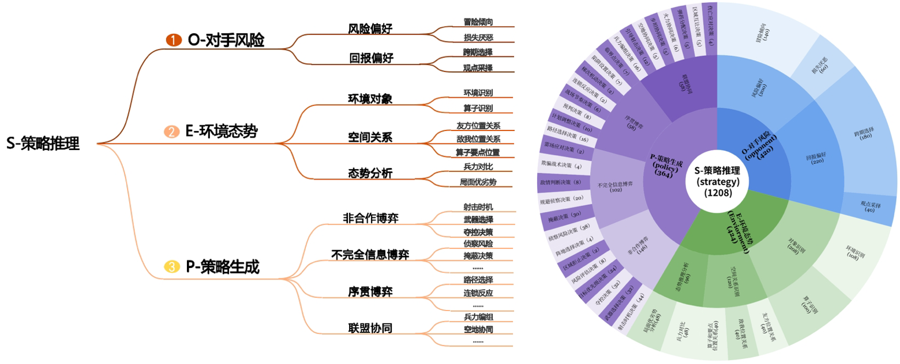

WGSR-Bench
首个以兵棋推演为载体的大模型策略推理基准。团队从博弈决策出发创新性地提出了策略推理S-POE的结构化认知框架，构建了基于S-POE的大模型策略推理评估基准WGSR-Bench。

查看更多
🎉 我们的优
势
我们具备国内规模最大的兵棋推演数据库，还可以帮助您测评模型
全面评测大模型与人类策略推理能力
评测大模型覆盖闭源顶级商用模型如GPT-4与Claude，开源主流模型如Deepseek R1，LLaMA近15种。评测人类选手选取专业类院校约150名人员（涵盖普通级、优秀级、精英级不同等级）。
评测基准覆盖策略推理关键能力
以S-POE结构化认知框架为基准，构建环境态势、对手风险、博弈策略生成为核心任务的策略推理子集MM-SA-Bench、PsyR-OM-Bench以及PGG-Bench。
📝 信息发
布
发布平台新功能、兵棋推演大模型策略推理基准的最新信息
平台信息
查看更多
•
2025-06-24
平台新增测评功能，用户可上传自己的模型进行测评
•
2025-06-10
平台新增测评功能，用户可上传自己的模型进行测评
•
2025-06-09
平台新增测评功能，用户可上传自己的模型进行测评
•
2025-06-07
平台新增测评功能，用户可上传自己的模型进行测评
学术信息
查看更多
•
2025-06-12
庙算·大模型策略推理基准WGSR-Bench正式发布
•
2025-06-10
构建了基于S-POE的大模型策略推理评估基准WGSR-Bench
•
2025-06-09
围绕环境态势、对手风险、博弈策略生成等核心任务设计测试样本
•
2025-06-07
数据库拥有超过40万场对抗复盘（包括文本数据量约2TB，图像视频数据量超过1PB
📧 关于我
们
团队成员来自中科院自动化所智能系统中心
智能系统与工程研究中心成立于2018年4月28日，是中国科学院自动化研究所立足智能学科优势和技术积累，面向国家未来重大战略需求而建立的核心部门。中心的定位是：瞄准国家战略需求，着眼于未来智能技术带来的理论变革及应用挑战，研究面向智能决策的人机对抗智能理论、技术模型和关键算法，形成人机对抗智能原型实用系统和公共开放平台，为智能决策相关领域提供理论基础和技术标准支撑，形成核心技术系统优势，创新资源共建共享，推动人机对抗智能技术生态构建，建设成国际上具备影响力的智能系统与工程研究机构。
电话：010-82544577 邮编：100190 传真：010-82544577 邮箱：**@ia.ac.cn
智能系统与工程研究中心成立于2018年4月28日，是中国科学院自动化研究所立足智能学科优势和技术积累，面向国家未来重大战略需求而建立的核心部门。中心的定位是：瞄准国家战略需求，着眼于未来智能技术带来的理论变革及应用挑战，研究面向智能决策的人机对抗智能理论、技术模型和关键算法，形成人机对抗智能原型实用系统和公共开放平台，为智能决策相关领域提供理论基础和技术标准支撑，形成核心技术系统优势，创新资源共建共享，推动人机对抗智能技术生态构建，建设成国际上具备影响力的智能系统与工程研究机构。
电话：010-82544577 邮编：100190 传真：010-82544577 邮箱：**@ia.ac.cn